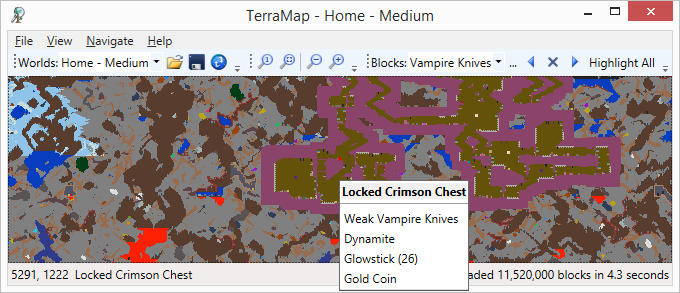
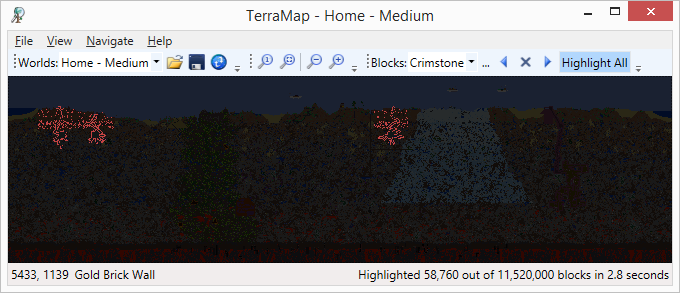

TerraMap
TerraMapLegacy · No longer supported
TerraMap for Windows
Please use the TerraMap desktop app instead. It's supported, works on Windows, macOS and Linux, and is easier to use.
TerraMap Windows won't open worlds from Terraria v1.4.5.7 or later, and won't receive any more updates. Microsoft no longer provides the tools needed to build it, and it requires the very outdated .NET Framework v4.6.1.
Downloads for older Terraria versions
| Terraria version | Download |
|---|---|
| v1.4.5.7 and later | Desktop app |
| v1.4.5.5 | TerraMap Windows v1.5.0 |
| v1.4.4 | TerraMap Windows v1.4.19 |
| v1.4.3.2 | TerraMap Windows v1.4.13 |
| v1.4.2.3 | TerraMap Windows v1.4.11 |
| v1.4.1 | TerraMap Windows v1.4.10 |
| v1.4.0 | TerraMap Windows v1.4.9 |
| v1.3.5 | TerraMap Windows v1.3.54 |
Features
- Completely read-only, with no risk of corrupting or overwriting your world files.
- Open worlds from a pre-populated list, or browse to a
.wldfile. - Pan by dragging, zoom with the mouse wheel or the - and + keys, plus Zoom to Fit and Zoom to 100%.
- Choose a block or item from the list, or search with Ctrl+F.
- Find Next (F3) and Find Previous (Shift+F3) to jump to matching blocks, or chests that contain the selected item.
- Highlight All to highlight every match.
- Right-click a chest to list its items, or a sign or grave marker to read its text.
- Save a PNG image of the whole world with Ctrl+S, and Refresh to see changes while you play.
- Jump to the spawn point, the Dungeon and NPCs, and view world properties.
- Command-line image creation, great for servers.



